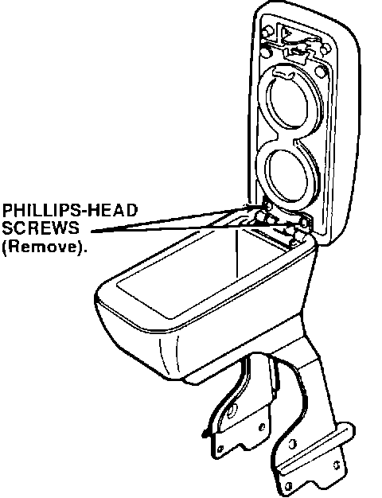

Cupholder - Replacement
October 27, 1992YEAR
1990-93
MODEL
INTEGRA
VIN APPLICATION
ALL
BULLETIN NO.
92-033
Replacement Cupholder in Optional Armrest
PROBLEM
The cupholder in the optional armrest is broken.
CORRECTIVE ACTION
1. Open the armrest.

2. While holding the acorn nuts on the backside of the cup holder, remove the two Phillips-head screws.
3. Install the new cup holder using the original hardware.
PARTS INFORMATION
Cup holder:
P/N 08U90-SJ4-00004
Part numbers are for Reference Only.
Check with your Parts Department for latest information.
WARRANTY CLAIM INFORMATION
In warranty:
The normal warranty applies.
Out of warranty:
Any repair performed after warranty expiration may be eligible for goodwill consideration by the District Service Manager. You must request consideration, and get the DSM's decision, before starting work.
Operation number: 042110
Flat rate time: .2 hour
Failed P/N: 08U90-SK7-212
Defect code: 018
Contention code: B01